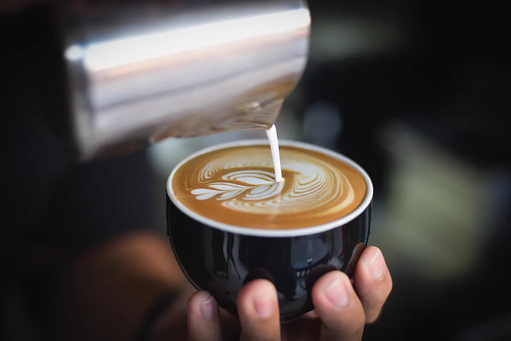
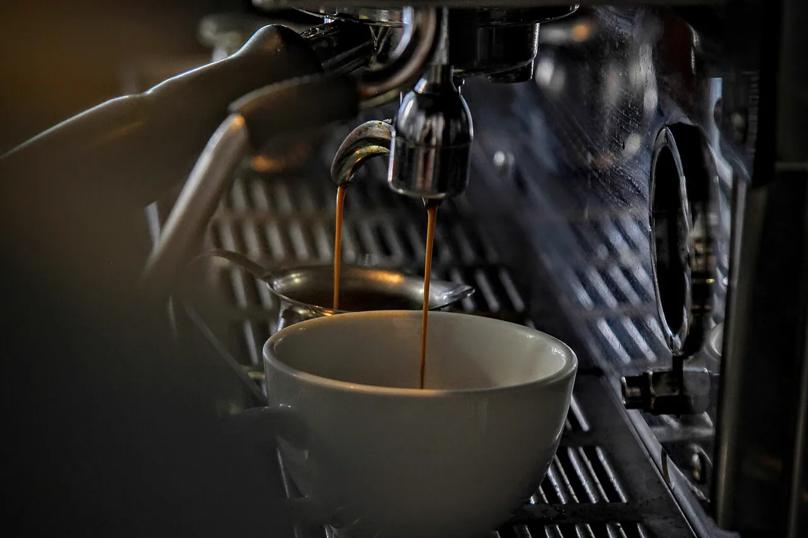

Каждый день 11:00–21:00
Котокафе «КОфеТерий» в Ярославле
Кофе, десерты и кошки, которые сами решают, к кому подойти. Каждый день с 11 до 21.
Адрес и часы работы
Ярославль. Заходите выпить на месте или возьмите с собой.
- Каждый день
- 11:00–21:00
- Где
- Ярославль

Кошки здесь хозяева, мы просто варим кофе.
Гладить можно, будить нельзя. Остальные правила — ниже.


Правила в гостях у кошек
Простые, чтобы и вам, и кошкам было спокойно.
Не будим кошек
Если кошка спит, она спит. Подойдёт сама, когда захочет.
Угощаем только кормом от нас
Свою еду кошкам давать нельзя — у некоторых диета.
Дети — со взрослыми
Покажем малышам, как гладить, чтобы обоим понравилось.